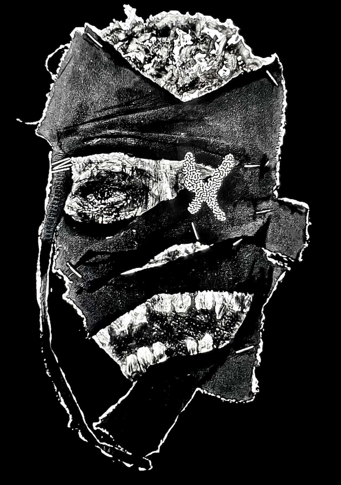
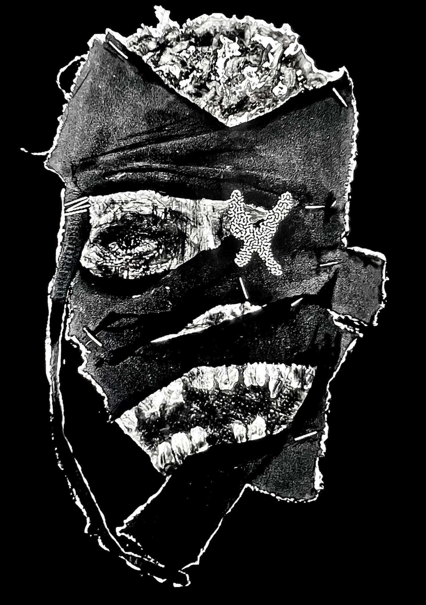
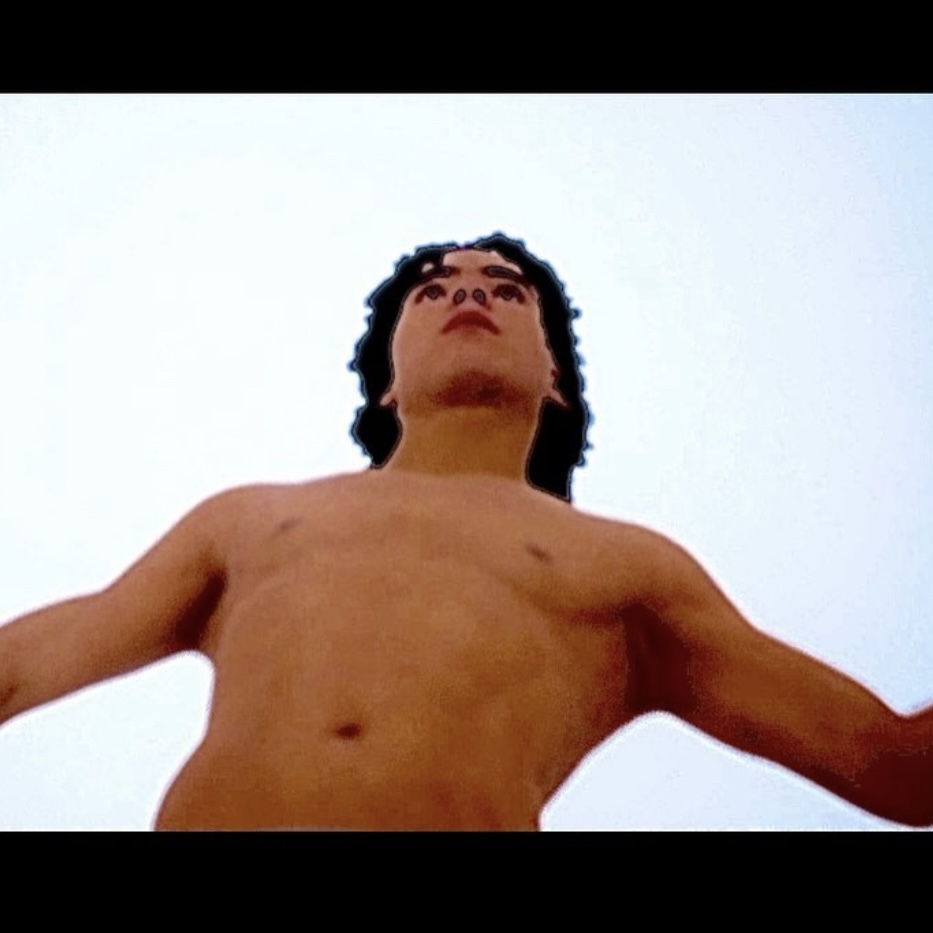
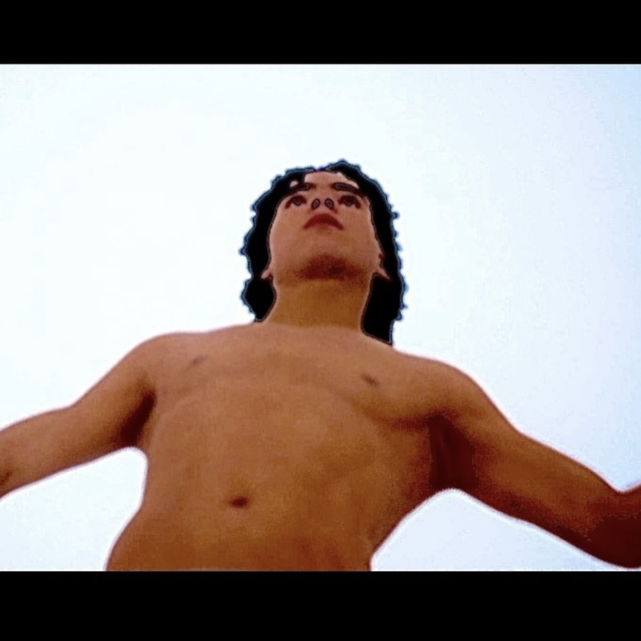

About Me
I'm Matheus Camilleri - a creative systems designer working at the intersection of art,
tech, and strategy. My portfolio shows how I build frameworks that evolve into brands,
studios, and collaborative ecosystems.
What I love creating: VFX videos, music/art videos, worldbuilding, creative direction, visual art.
Industries I want to work in: Web3, entertainment, gaming, AI art, natural design.
What If You Had $22 Million?
I’d build a multi-studio creative ecosystem with shared infrastructure: a global content network through Mangosalad,
decentralized grants and artist licensing through Arthouse, and community-powered landscapes
through Good Dirt. I’d create replicable systems that make artists iconic, not just seen.
Layout of the content management system
TV episode intro animation
Studio Publishing Framework
A comprehensive content management system designed for creative
studios
_____________________________________________________________________________________
+------------------------+
| CREATION INPUT |
+------------------------+
| Artists (Submissions & |
| Interviews) |
| Community (Prompts) |
+------------------------+
|
v
+------------------------+
| CORE MODULES |
+------------------------+
| - Magazine |
| - TV Episodes |
| - Social Content |
| - Artist Directory |
+------------------------+
|
v
+------------------------+
| USER FLOW |
+------------------------+
| Submit → Curate → Drop |
+------------------------+
______________|______________
| | |
v v v
+----------+ +-----------+ +-------------+
| GROWTH | | REVENUE | | REPLICATION |
+----------+ +-----------+ +-------------+
| Fans | | Sponsors | | Fork/Remix |
| Collabs | | Brokering | | New Studios |
+----------+ +-----------+ +-------------+
\\ | //
\\ | //
\\_________|___________//
v
+-------------------------------+
| COMMUNITY PARTICIPATION |
+-------------------------------+
| - React to drops |
| - Share & repost |
| - Remix content |
| - Submit new prompts |
| - Join creator circle |
+-------------------------------+
|
v
(Back to CREATION INPUT)
_____________________________________________________________________________________
I designed Mangosalad to scale - not just as a brand, but as a
repeatable publishing system. It organizes art across formats: curated
social posts, seasonal magazine issues, and longform “TV” episodes.
Contributors can plug in, audiences can tune in, and everything is
built for modular evolution.
Design Approach:
The branding is intentionally fluid - logos morph to match themes,
content structures follow the rhythm of real publishing, like
recurring magazine issues or scheduled content drops, and each issue
has its own flavor while staying recognizable.
Why It Matters:
Mangosalad isn’t just a brand. It’s a container. This framework lets
ideas take shape without friction - and gives artists a system to
belong to without being boxed in.

Modular mushroom production chamber

Medicinal Lionsmane mushrooms

Local farmers market mushroom stall
Good Dirt Co. System
A creative system rooted in ecology, rhythm, and sacred design.
_____________________________________________________________________________________
GOOD DIRT CO.
[ Rooted Design System ]
(Input from Designers + Landowners)
↓
▒▒▒ LAND STUDY ▒▒▒
↓ ↓
+------------+ +----------+
| Ecological | | Visual |
| Function | | Harmony |
+------------+ +----------+
↓
▓▓▓ CORE SYSTEMS ▓▓▓
| Garden Layouts |
| Mushroom Chambers |
| Local Product Flow |
+--------------------+
↓
Community Build Days
↓
Local Markets + Online Kits
↓
Community Feedback & Media Uploads
↓
New Designs Seeded for Next Season
_____________________________________________________________________________________
Good Dirt Co. is a living design system rooted in nature, rhythm, and
community. I designed it to blend landscape architecture, ecological
production, and creative marketing into a single experience - one that
could be farmed, sold, and lived in.
Role:
Founder, Creative Systems Designer, Creative Director.
Design Approach:
Design begins with deep assessment. Production follows natural rhythm
and form. Marketing becomes worldbuilding - every product, story, and
visual points to a unified philosophy: beauty is grown, not bought.
Why It Matters:
This was my first full-scale attempt at designing for the physical
world. I wasn’t just building a brand. I was shaping space - and
trying to make the land feel sacred again.
VR Experience System
Designing immersive therapeutic spaces using AI and memory.
_____________________________________________________________________________________
VR EXPERIENCE SYSTEM
[ Memory-Based Therapeutic Design ]
┌────────────────────────────────┐
│ Patient Memory (Scan + Upload) │
└────────────────────────────────┘
↓
Therapist Adjustments
↓
+----------------------+
| Emotional Parameters |
+----------------------+
↓
┌─────────────────────┐
│ AI-Generated Space │
└─────────────────────┘
↓
◉ Personalized VR Session ◉
(Emotional Companion Guides)
↓
+--------------------+
| Comfort & Healing |
+--------------------+
↓
Community: Share Memories & Vote
↓
System evolves with each use loop
_____________________________________________________________________________________
This project reimagines therapy through immersive storytelling. I
built a system that transforms Gaussian Splatting scans into realistic
3D environments, supported by an emotionally intelligent AI companion.
The goal: make memory feel inhabitable, and support feel personal.
Role:
Creative Systems Designer, Technical Researcher, Emotional UX
Designer.
Design Approach:
- Photoreal environment reconstruction using Gaussian Splatting
- Emotional AI chatbot with backstory, memory, and tone
- Configurable experience templates for therapists and users
Why It Matters:
This was interaction as healing. It combined cutting-edge tech with
deep human intention - designing not for attention, but for comfort,
care, and connection.
EMPORIUM Strategy
Elevating material craftsmanship through brand narrative.
A rebrand and sales strategy system for a boutique stone fabrication
studio. I crafted their narrative direction, event identity, and
online experience to reflect both artistry and luxury service.
Role:
Creative Strategist & Director. I developed their positioning, visual
storytelling, and Client Experience Guide.
Design Approach:
Emporium wanted to evolve and connect with a younger, design-conscious
audience. I repositioned their voice and visuals, using Illustrator to
craft a refined, editorial identity and reshaping their site to feel
like a design studio, not just a fabricator.
Why It Matters:
This project proved that even raw materials like stone need human
storytelling. It pushed me to find elegance in sales - and discover
the importance of creative direction.
Mangosalad
Experimental studio for digital entertainment & weird creative tech
Mangosalad is my studio and brand. It functions as a modular publishing system
with magazine issues, curated art posts, and visual experiments. It’s a house
for creative chaos and collaboration.
Role:
Founder, Creative Director
Design Approach:
Fluid branding, seasonal identity, and content-as-architecture.
Why It Matters:
It shows how systems can enable expression, not limit it. This is art as infrastructure.
@mmmmmsalad
Arthouse
Decentralized platform for digital creators & studios
Arthouse is a DAO system I designed to support on-chain creative ventures. Artists earn governance and funding through contribution, not clout. It links studios like Mangosalad into a shared ecosystem.
Role:
Founder, Curator
Design Approach:
Modular DAO logic, reputation-based systems, spotlight voting.
Why It Matters:
It’s my attempt to reshape how art is made, funded, and owned in the digital age
Neuroline
AI systems that scale creative businesses
Neuroline is an agency I co-founded. We build no-code/low-code automation systems for creators and small businesses, using AI agents and intelligent workflows.
Role:
Co-founder, Creative Director & Strategist.
Design Approach:
UX-focused automation, human-centered AI, clear onboarding paths.
Why It Matters:
It’s about giving entrepreneurs access to powerful, easy-to-use tech that saves time and boosts growth.
Art
A collection of personal works exploring themes of identity,
memory, and digital consciousness
These pieces represent an ongoing investigation into how technology
shapes human experience and perception.
Medium:
Mixed Media, Digital Painting, Installation
Themes:
Identity, Memory, Digital Consciousness
https://www.instagram.com/2.24.2004/
 



 
